Sequence Clustering
Mohammed Saqr
University of Eastern FinlandSonsoles López-Pernas
University of Eastern FinlandKamila Misiejuk
FernUniversität in Hagen, GermanySource:
vignettes/clustering.Rmd
clustering.RmdA transition network estimated from all sequences describes an average process, which may describe none of the units that produced it. Clustering divides the sequences into groups whose members resemble each other more than they resemble the members of other groups, and a network can then be estimated for each group (López-Pernas, Tikka & Saqr 2025). Nestimate (Saqr, López-Pernas & Misiejuk 2026) clusters sequences by the dissimilarity between them or with a mixture of Markov models, and turns either clustering into one network per cluster.
| Step | Function |
|---|---|
| Cluster by dissimilarity | build_clusters() |
| Compare numbers of clusters, distances and methods | cluster_choice() |
| Check a clustering | cluster_diagnostics() |
| Cluster with a mixture Markov model |
build_mmm(), cluster_mmm(),
compare_mmm()
|
| One network per cluster |
build_network() on a clustering |
| Clustering and networks in one call | cluster_network() |
| Compare the clusters’ networks | permutation() |
Data
human_long holds the coded human turns of 429 human-AI
pair-programming (“vibe coding”) sessions, one row per action, coded
into three clusters of codes: Directive,
Evaluative and Metacognitive. The network
holds one sequence per session, ordered by
order_in_session; the timestamp column has the
resolution of a day and would split the sessions that run over two days.
Sessions range from 1 to 164 actions. Vibe coding, programming by
conversation with an AI assistant (Sarkar & Drosos 2025), has been
studied with transition networks and sequence analysis (Saqr, Misiejuk
& López-Pernas 2026; Misiejuk et al. 2026).
library(Nestimate)
#> Registered S3 methods overwritten by 'Nestimate':
#> method from
#> plot.net_mlvar idiographic
#> print.net_mlvar idiographic
#> summary.net_mlvar idiographic
net <- build_network(human_long, method = "tna", action = "cluster",
actor = "session_id", time = "order_in_session")
#> Metadata aggregated per session: ties resolved by first occurrence in 'code' (76 sessions)Clustering by dissimilarity
build_clusters() computes a distance between every pair
of sequences and groups the sequences that are close (Saqr,
López-Pernas, Helske, et al. 2024). It takes the network, which stores
the sequences, or the sequences themselves. By default it uses the
Hamming distance, the number of positions at which two sequences differ
(Hamming 1950), and partitions the sequences around medoids (PAM;
Kaufman & Rousseeuw 1990), each cluster represented by its most
central sequence.
clusters_hamming <- build_clusters(net, k = 3)
clusters_hamming
#> Sequence Clustering [pam]
#> Sequences: 429 | Clusters: 3
#> Dissimilarity: hamming
#> Quality: silhouette = 0.215
#>
#> Cluster N Mean within-dist Medoid
#> 1 183 (42.7%) 7.345 111
#> 2 106 (24.7%) 52.766 282
#> 3 140 (32.6%) 14.881 265The print shows each cluster’s size, mean within-cluster distance and medoid, and the average silhouette width, which compares each sequence’s distance to its own cluster with its distance to the nearest other one: near 1 for well-separated clusters, near 0 for overlapping ones (Rousseeuw 1987). The three clusters hold 183, 106 and 140 sessions, with a silhouette of 0.22.
dissimilarity selects the distance (Studer &
Ritschard 2016):
| Distance | What it compares |
|---|---|
hamming |
the states at each position |
lv, osa, dl
|
the edits (insertions, deletions, substitutions, transpositions) that turn one sequence into the other |
lcs |
the longest common subsequence |
qgram, cosine, jaccard
|
the patterns of q consecutive states the sequences contain |
jw |
the Jaro-Winkler similarity of the sequences as strings |
method selects the clustering: "pam"
(default) or a hierarchical clustering, which merges the closest
sequences or groups step by step: "ward.D2" (Ward’s
criterion, Ward 1963, as implemented by Murtagh & Legendre 2014),
"ward.D", "complete", "average",
"single", "mcquitty" and
"centroid". The Hamming distance can also weight the
positions (weighted = TRUE, with lambda
setting how fast the weight decays), so that early differences count
more.
Distance and sequence length
The Hamming and edit distances count positions or edits, so for
sequences of unequal length they are driven by length.
sequence_metrics() compares the clusters of a grouped
network on any index, here the number of actions
(valid_n).
set.seed(2026)
sequence_metrics(build_network(clusters_hamming), indices = "valid_n")
#> Sequence metrics by cluster [1 indices | 3 groups: Cluster 1, Cluster 2, Cluster 3]
#> permutation of the one-way F: 1000 iter (BH), within session
#>
#> index group n mean sd eta_sq F p p_adj
#> valid_n Cluster 1 183 9.58 3.65 0.61 332.83 0.000999 0.000999
#> valid_n Cluster 2 106 56.50 29.42 0.61 332.83 0.000999 0.000999
#> valid_n Cluster 3 140 21.81 4.44 0.61 332.83 0.000999 0.000999The three Hamming clusters are sessions of about 10, 57 and 22 actions: the clustering separates short, long and medium sessions. The cosine distance compares the profiles of the patterns two sequences contain, normalised by their length, and groups sessions by what they contain.
Choosing the clustering
cluster_choice() fits every combination of
k, dissimilarity and method it is
given and returns one row per configuration with the average silhouette,
the mean within-cluster distance, the cluster sizes and the ratio of the
largest to the smallest cluster; <-- best marks the
highest silhouette. Its plot() method draws the sweep as
lines (type = "lines", silhouette against k),
bars ("bars", one per configuration), a heatmap
("heatmap"), the trade-off between silhouette and size
ratio ("tradeoff") or panels per method
("facet").
Number of clusters and method
choice_k <- cluster_choice(net, k = 2:4, method = c("pam", "ward.D2",
"average"))
choice_k
#> Cluster Choice (sweep: k x method)
#>
#> k method silhouette within_dist sizes ratio best
#> 2 pam 0.497 22.993 [116, 313] 2.698
#> 3 pam 0.215 21.027 [106, 183] 1.726
#> 4 pam 0.256 18.870 [24, 183] 7.625
#> 2 ward.D2 0.775 26.048 [11, 418] 38.000
#> 3 ward.D2 0.474 20.914 [11, 303] 27.545
#> 4 ward.D2 0.419 19.445 [11, 303] 27.545
#> 2 average 0.783 26.365 [9, 420] 46.667 <-- best
#> 3 average 0.776 26.042 [1, 420] 420.000
#> 4 average 0.770 25.792 [1, 420] 420.000
plot(choice_k, type = "lines")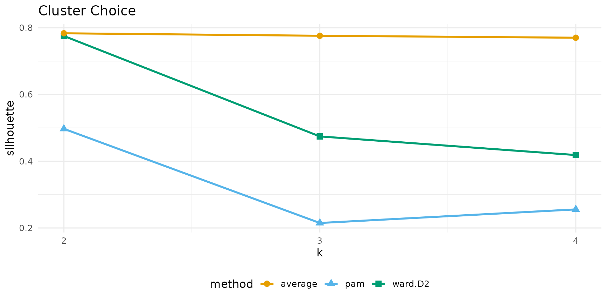
With the Hamming distance, the highest silhouettes (0.78) belong to average linkage and Ward’s criterion, which put 9 or 11 sessions in one cluster and the rest in the other. A small cluster of very long sessions lies far from everything else and raises the silhouette without describing the data, which the size ratio (up to 420) shows. PAM gives balanced clusters with lower silhouettes.
Distance
choice_distance <- cluster_choice(net, k = 2,
dissimilarity = c("hamming", "lv", "lcs",
"qgram", "cosine",
"jaccard"),
method = "pam")
choice_distance
#> Cluster Choice (sweep: dissimilarity)
#>
#> dissimilarity silhouette within_dist sizes ratio best
#> hamming 0.497 22.993 [116, 313] 2.698 <-- best
#> lv 0.494 17.682 [138, 291] 2.109
#> lcs 0.488 20.368 [115, 314] 2.730
#> qgram 0.470 20.136 [130, 299] 2.300
#> cosine 0.419 0.183 [170, 259] 1.524
#> jaccard 0.313 0.359 [162, 267] 1.648
plot(choice_distance, type = "bars", abbrev = TRUE)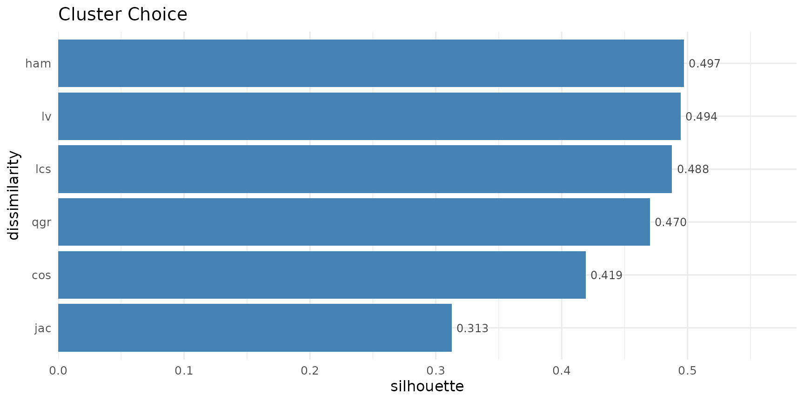
With two clusters and PAM, the Hamming, edit and longest-common-subsequence distances have the highest silhouettes (0.49 to 0.50), and their clusters are again separated by length. The cosine distance has a lower silhouette (0.42) and the most balanced clusters (170 and 259 sessions).
Cosine distance
choice_cosine <- cluster_choice(net, k = 2:4, dissimilarity = "cosine",
method = c("pam", "ward.D2"))
choice_cosine
#> Cluster Choice (sweep: k x method)
#>
#> k method silhouette within_dist sizes ratio best
#> 2 pam 0.419 0.183 [170, 259] 1.524 <-- best
#> 3 pam 0.251 0.164 [102, 169] 1.657
#> 4 pam 0.284 0.148 [4, 169] 42.250
#> 2 ward.D2 0.397 0.187 [172, 257] 1.494
#> 3 ward.D2 0.416 0.170 [4, 257] 64.250
#> 4 ward.D2 0.332 0.151 [4, 190] 47.500
plot(choice_cosine, type = "tradeoff")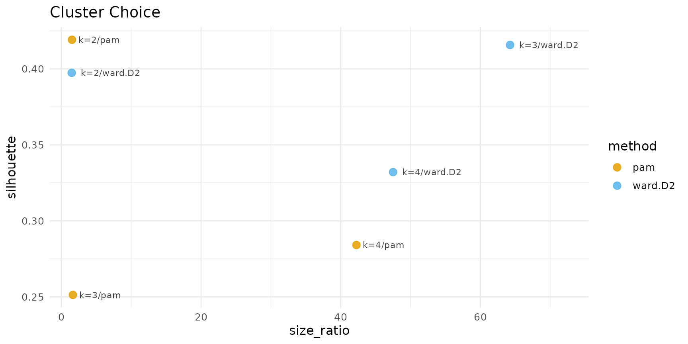
The trade-off plot places each configuration by its silhouette and its size ratio; the preferred configurations are high and to the left. Two clusters with PAM have the highest silhouette, 0.42, with clusters of 170 and 259 sessions. Three clusters with Ward’s criterion have a similar silhouette (0.42), but one of their clusters holds four sessions.
clusters <- build_clusters(net, k = 2, dissimilarity = "cosine")
clusters
#> Sequence Clustering [pam]
#> Sequences: 429 | Clusters: 2
#> Dissimilarity: cosine
#> Quality: silhouette = 0.419
#>
#> Cluster N Mean within-dist Medoid
#> 1 170 (39.6%) 0.247 171
#> 2 259 (60.4%) 0.140 376Diagnostics
cluster_diagnostics() reports one row per cluster for
any clustering: for a dissimilarity clustering the size, the mean
within-cluster distance and the silhouette, for a mixture Markov model
the mixing share, the average posterior probability and the
classification error.
diagnostics <- cluster_diagnostics(clusters)
diagnostics
#> Cluster Diagnostics (distance) [pam / cosine]
#> Sequences: 429 | Clusters: 2
#> Quality: silhouette = 0.419
#>
#> Cluster N Mean within-dist Silhouette
#> 1 170 (39.6%) 0.247 0.199
#> 2 259 (60.4%) 0.140 0.564
plot(diagnostics, type = "silhouette")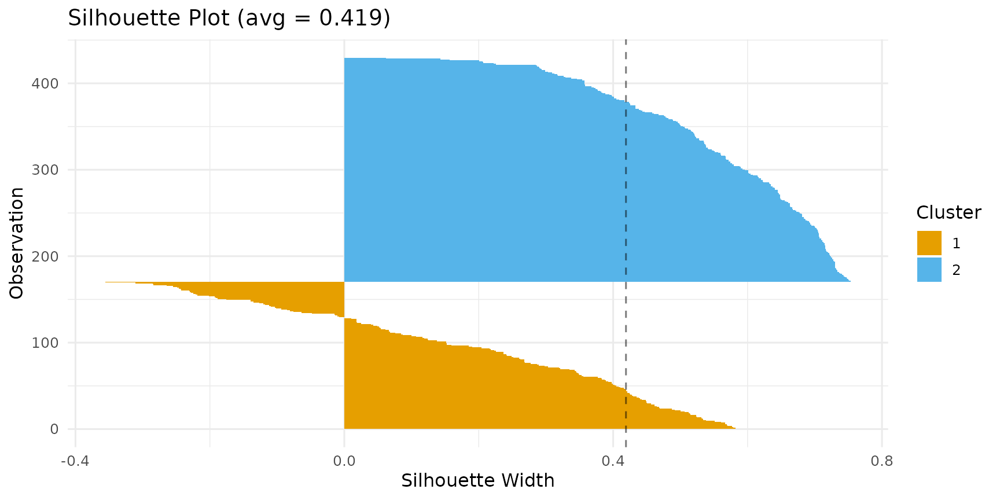
The second cluster is well separated (silhouette 0.56) and the first less so (0.20); the silhouette plot shows some sessions of the first cluster with negative values, closer to the other cluster than to their own.
plot(clusters, type = "mds")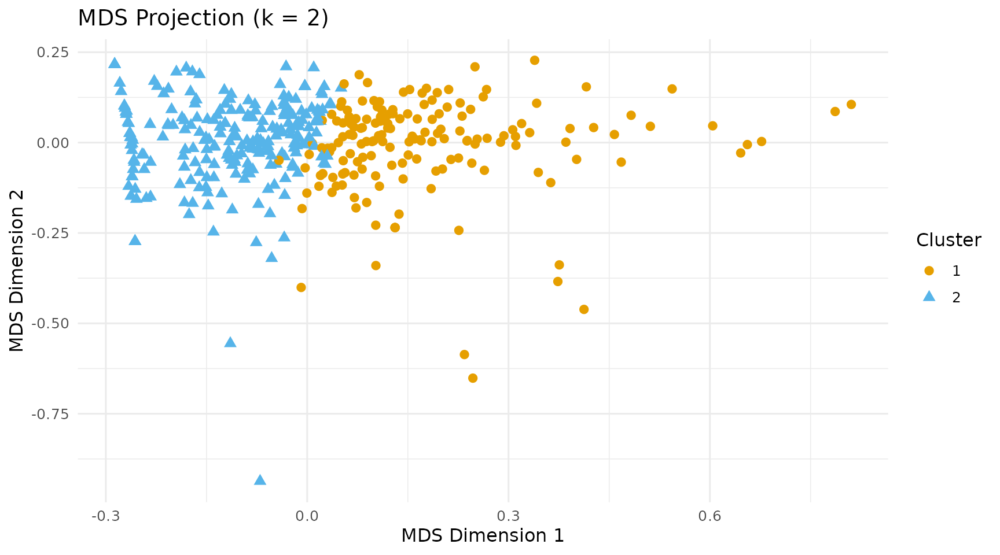
The multidimensional scaling plot places the sessions in two dimensions so that their distances approximate the cosine distances, with a colour and a shape per cluster. The second cluster is compact; the first spreads widely.
What the clusters contain
sequence_plot() draws the sessions of each cluster and
the share of each state at each position; trim = 0.9 keeps
the positions that hold 90% of the actions, since few sessions are
long.
sequence_plot(clusters, type = "index", ncol = 2, nrow = 1, trim = 0.9)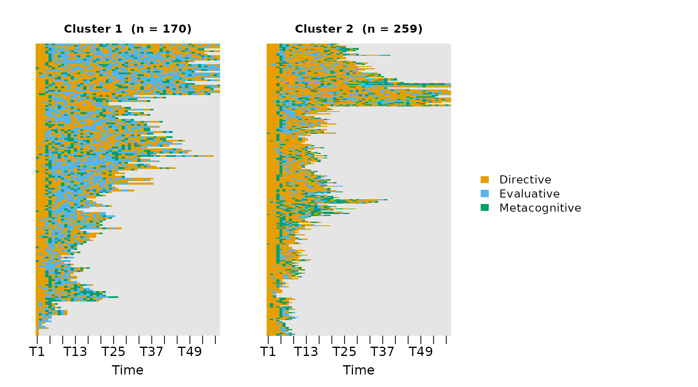
sequence_plot(clusters, type = "distribution", ncol = 2, nrow = 1,
trim = 0.9)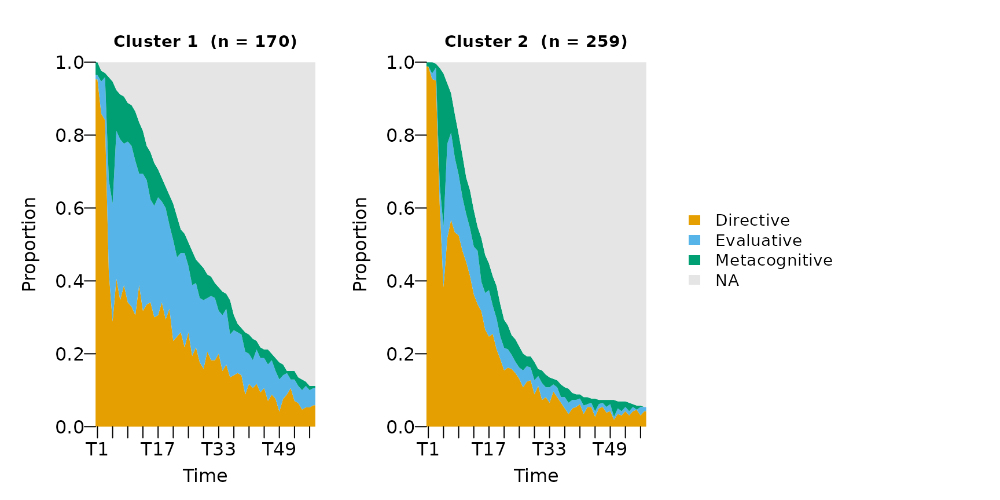
sequence_metrics() compares the clusters on the indices
that describe them.
set.seed(2026)
sequence_metrics(build_network(clusters),
indices = c("valid_n", "transition_rate",
"longitudinal_entropy", "dominant_proportion"))
#> Sequence metrics by cluster [4 indices | 2 groups: Cluster 1, Cluster 2]
#> permutation of the one-way F: 1000 iter (BH), within session
#>
#> index group n mean sd diff g g_lo g_hi eta_sq
#> valid_n Cluster 1 170 33.61 30.75 -13.99 -0.61 -0.80 -0.41 0.08
#> valid_n Cluster 2 259 19.62 16.02 -13.99 -0.61 -0.80 -0.41 0.08
#> transition_rate Cluster 1 166 0.57 0.13 -0.12 -0.90 -1.11 -0.70 0.16
#> transition_rate Cluster 2 259 0.44 0.14 -0.12 -0.90 -1.11 -0.70 0.16
#> longitudinal_entropy Cluster 1 170 0.85 0.16 -0.15 -0.83 -1.03 -0.63 0.14
#> longitudinal_entropy Cluster 2 259 0.70 0.19 -0.15 -0.83 -1.03 -0.63 0.14
#> dominant_proportion Cluster 1 170 0.52 0.10 0.16 1.46 1.25 1.68 0.34
#> dominant_proportion Cluster 2 259 0.68 0.11 0.16 1.46 1.25 1.68 0.34
#> F p p_adj
#> 37.95 0.000999 0.000999
#> 37.95 0.000999 0.000999
#> 82.58 0.000999 0.000999
#> 82.58 0.000999 0.000999
#> 70.85 0.000999 0.000999
#> 70.85 0.000999 0.000999
#> 220.61 0.000999 0.000999
#> 220.61 0.000999 0.000999The first cluster (170 sessions) alternates between directives and
evaluations: it changes state more often (transition rate 0.57 against
0.44) and spreads its actions more evenly (entropy 0.85 against 0.70).
The second (259 sessions) is dominated by directives, which take 68% of
a session against 52% (dominant_proportion). The first
cluster’s sessions are also longer (34 against 20 actions, Hedges’ g =
-0.61), so the clusters differ in length as well as in content.
Mixture Markov models
A mixture Markov model groups the sequences by their transitions: it
fits one Markov chain per cluster and assigns each sequence to the chain
that most probably generated it (Helske et al. 2024).
compare_mmm() fits the model for several numbers of
clusters and compares them with the BIC (Schwarz 1978), the AIC and the
ICL (Biernacki, Celeux & Govaert 2000), lower being better, and the
average posterior probability of the assigned cluster (AvePP). Each
model is estimated from 50 random starts; seed makes them
reproducible.
mixture_choice <- compare_mmm(net, k = 2:5, seed = 2026)
mixture_choice
#> MMM Model Comparison
#>
#> k log_likelihood AIC BIC ICL AvePP Entropy converged
#> 2 -10029.568 20093.14 20162.18 20375.01 0.7957056 0.6128693 TRUE
#> 3 -10010.545 20073.09 20178.69 20517.41 0.7057432 0.5768109 TRUE
#> 4 -9997.471 20064.94 20207.09 20658.84 0.6255671 0.6202143 TRUE
#> 5 -9987.099 20062.20 20240.90 20746.91 0.5868660 0.6028683 FALSE
#> best
#> <-- BIC
#>
#>
#>
plot(mixture_choice)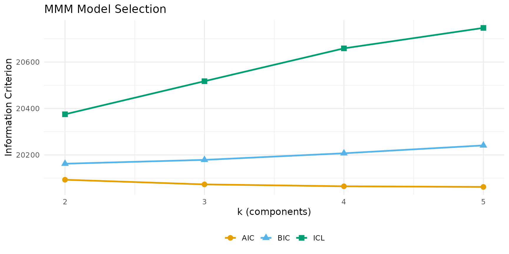
The BIC and the ICL are lowest with two clusters, which also have the highest AvePP (0.80). The AIC keeps decreasing with more clusters, and the five-cluster model does not converge.
mixture <- build_mmm(net, k = 2, seed = 2026)
mixture
#> Mixed Markov Model
#> Sequences: 429 | Clusters: 2 | States: 3
#> ICs: LL = -10029.568 | BIC = 20162.181 | AIC = 20093.136 | ICL = 20375.009
#> Quality: AvePP = 0.796 | Entropy = 0.613 | Class.Err = 20.4%
#>
#> Cluster N Mix% AvePP
#> 1 155 (36.1%) 44.5% 0.834
#> 2 274 (63.9%) 55.5% 0.774In the first cluster (155 sessions) an evaluation is followed by another evaluation with probability 0.47 and a directive by an evaluation with probability 0.30. In the second (274 sessions) directives follow directives (0.65) and metacognitive actions follow metacognitive actions (0.31) more often. The model and the cosine clustering describe a similar division: sessions that alternate between directing and evaluating, and sessions that mostly direct.
mixture_diagnostics <- cluster_diagnostics(mixture)
mixture_diagnostics
#> Cluster Diagnostics (mmm) [k = 2]
#> Sequences: 429 | Clusters: 2 | States: 3
#> Quality: AvePP = 0.796 | Entropy = 0.613 | Class.Err = 20.4%
#> ICs: LL = -10029.568 | BIC = 20162.181 | AIC = 20093.136 | ICL = 20375.009
#>
#> Cluster N Mix% AvePP Class.Err%
#> 1 155 (36.1%) 44.5% 0.834 16.6%
#> 2 274 (63.9%) 55.5% 0.774 22.6%
plot(mixture_diagnostics, type = "posterior")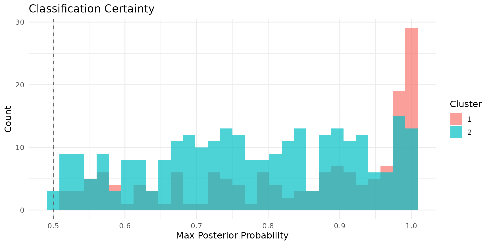
The average posterior probability is 0.83 in the first cluster and 0.77 in the second, and 20% of the sessions are expected to be misclassified. The posterior plot shows each cluster’s distribution of the sessions’ posterior probabilities; mass near 1 means clear assignments.
sequence_plot(mixture, type = "index", ncol = 2, nrow = 1, trim = 0.9)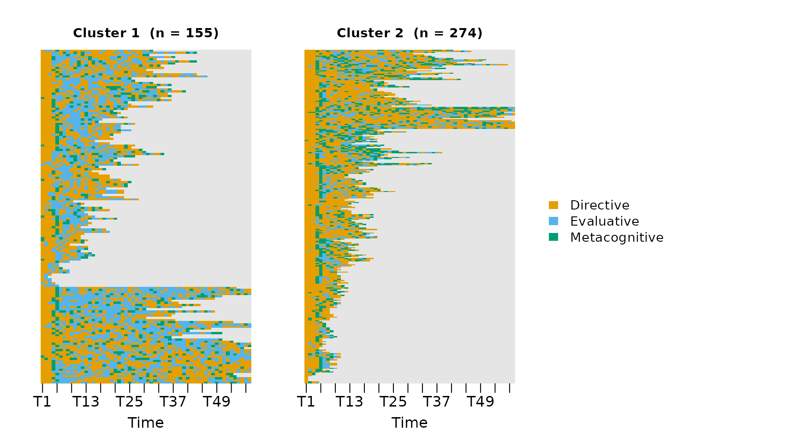
cluster_mmm() fits the same model and returns the same
net_mmm object; it is the name under which the mixture
model is reached from cluster_network().
Networks per cluster
A clustering becomes one network per cluster in two ways.
build_network() on a clustering, from
build_clusters() or build_mmm(), estimates a
network for each cluster from the clustered sequences and returns a
group of networks.
cluster_networks <- build_network(clusters)
cluster_networks
#> Group Networks (2 clusters via pam / cosine)
#>
#> Group Nodes Edges Weights N
#> Cluster 1 3 9 [0.105, 0.513] 170 (39.6%)
#> Cluster 2 3 9 [0.137, 0.685] 259 (60.4%)
plot(cluster_networks)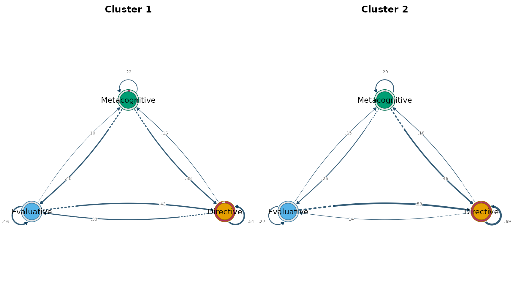
cluster_network() does the clustering and the networks
in one call: cluster_by takes the clustering method
("pam", a hierarchical method, or "mmm" for
the mixture model) and dissimilarity the distance.
one_call <- cluster_network(net, k = 2, cluster_by = "pam",
dissimilarity = "cosine")
one_call
#> Group Networks (2 clusters via pam / cosine)
#>
#> Group Nodes Edges Weights N
#> Cluster 1 3 9 [0.105, 0.513] 170 (39.6%)
#> Cluster 2 3 9 [0.137, 0.685] 259 (60.4%)
cluster_diagnostics(one_call)
#> Cluster Diagnostics (distance) [pam / cosine]
#> Sequences: 429 | Clusters: 2
#> Quality: silhouette = 0.419
#>
#> Cluster N Mean within-dist Silhouette
#> 1 170 (39.6%) 0.247 0.199
#> 2 259 (60.4%) 0.140 0.564With the same settings, the two routes give the same clusters and the
same networks, and cluster_diagnostics() reads either. The
two-step route keeps the clustering as its own object, to plot its
silhouettes or its MDS projection and to describe the clusters before
any network is estimated; the one-call route goes straight to the
networks. cluster_network() builds the per-cluster networks
afresh with the network’s method; inherit = TRUE also gives
them the source network’s threshold, scaling and estimator settings. For
the mixture model,
cluster_network(net, k = 2, cluster_by = "mmm", seed = 2026)
and build_network(mixture) return the fitted chains as
networks.
build_network(mixture)
#> Group Networks (2 clusters from MMM)
#>
#> Group Nodes Edges Weights N
#> Cluster 1 3 9 [0.092, 0.563] 155 (36.1%)
#> Cluster 2 3 9 [0.151, 0.649] 274 (63.9%)Comparing the clusters
permutation() compares the transition probabilities of
the clusters edge by edge, by shuffling the cluster labels of the
sessions.
set.seed(2026)
permutation(cluster_networks, iter = 1000)
#> Grouped Permutation Test
#> Groups: Cluster 1 vs Cluster 2
#>
#> -- Cluster 1 vs Cluster 2 --
#> Permutation Test: Transition Network (relative probabilities) [directed]
#> Iterations: 1000 | Alpha: 0.05
#> Nodes: 3 | Edges tested: 9 | Significant: 8
#> Global test (networks differ overall?): M = 1.057 (p = 0.000999) | S = 0.194 (p = 0.000999)The clusters were formed to differ, so differences between their networks are expected by construction; the test shows which transitions the clusters differ in, not whether such groups exist in the population.
How to cite this article
Saqr, M., López-Pernas, S., & Misiejuk, K. (2026). Sequence clustering. Nestimate. HTML · PDF
References
Biernacki, C., Celeux, G., & Govaert, G. (2000). Assessing a mixture model for clustering with the integrated completed likelihood. IEEE Transactions on Pattern Analysis and Machine Intelligence, 22(7), 719–725. https://doi.org/10.1109/34.865189
Hamming, R. W. (1950). Error detecting and error correcting codes. Bell System Technical Journal, 29(2), 147–160. https://doi.org/10.1002/j.1538-7305.1950.tb00463.x
Helske, J., Helske, S., Saqr, M., López-Pernas, S., & Murphy, K. (2024). A modern approach to transition analysis and process mining with Markov models in education. In M. Saqr & S. López-Pernas (Eds.), Learning analytics methods and tutorials: A practical guide using R (pp. 381–427). Springer. https://doi.org/10.1007/978-3-031-54464-4_12
Kaufman, L., & Rousseeuw, P. J. (1990). Finding groups in data: An introduction to cluster analysis. Wiley. https://doi.org/10.1002/9780470316801
López-Pernas, S., Tikka, S., & Saqr, M. (2025). Mining patterns and clusters with transition network analysis: A heterogeneity approach. In M. Saqr & S. López-Pernas (Eds.), Advanced learning analytics methods: AI, precision and complexity (pp. 447–468). Springer. https://doi.org/10.1007/978-3-031-95365-1_17
Misiejuk, K., López-Pernas, S., Oliveira, E., Rinja, D., & Saqr, M. (2026). It takes two to vibe code: Profiling student-AI programming interactions processes and their high order structure. In Proceedings of the 26th Koli Calling International Conference on Computing Education Research (pp. 1–11). ACM. https://doi.org/10.1145/3856208.3856254
Murtagh, F., & Legendre, P. (2014). Ward’s hierarchical agglomerative clustering method: Which algorithms implement Ward’s criterion? Journal of Classification, 31(3), 274–295. https://doi.org/10.1007/s00357-014-9161-z
Rousseeuw, P. J. (1987). Silhouettes: A graphical aid to the interpretation and validation of cluster analysis. Journal of Computational and Applied Mathematics, 20, 53–65. https://doi.org/10.1016/0377-0427(87)90125-7
Saqr, M., López-Pernas, S., & Misiejuk, K. (2026). Nestimate: An R package for dynamic, probabilistic, and high order network analysis. Applied Psychological Measurement. https://doi.org/10.1177/01466216261472019
Saqr, M., López-Pernas, S., Helske, S., Durand, M., Murphy, K., Studer, M., & Ritschard, G. (2024). Sequence analysis in education: Principles, technique, and tutorial with R. In M. Saqr & S. López-Pernas (Eds.), Learning analytics methods and tutorials: A practical guide using R (pp. 321–354). Springer. https://doi.org/10.1007/978-3-031-54464-4_10
Saqr, M., Misiejuk, K., & López-Pernas, S. (2026). Human-AI collaboration or obedient and often clueless AI in instruct, serve, repeat dynamics? The Internet and Higher Education, 70, 101087. https://doi.org/10.1016/j.iheduc.2026.101087
Sarkar, A., & Drosos, I. (2025). Vibe coding: Programming through conversation with artificial intelligence. In Proceedings of the 36th Annual Conference of the Psychology of Programming Interest Group (PPIG 2025). https://doi.org/10.48550/arXiv.2506.23253
Schwarz, G. (1978). Estimating the dimension of a model. The Annals of Statistics, 6(2), 461–464. https://doi.org/10.1214/aos/1176344136
Studer, M., & Ritschard, G. (2016). What matters in differences between life trajectories: A comparative review of sequence dissimilarity measures. Journal of the Royal Statistical Society: Series A (Statistics in Society), 179(2), 481–511. https://doi.org/10.1111/rssa.12125
Ward, J. H. (1963). Hierarchical grouping to optimize an objective function. Journal of the American Statistical Association, 58(301), 236–244. https://doi.org/10.1080/01621459.1963.10500845